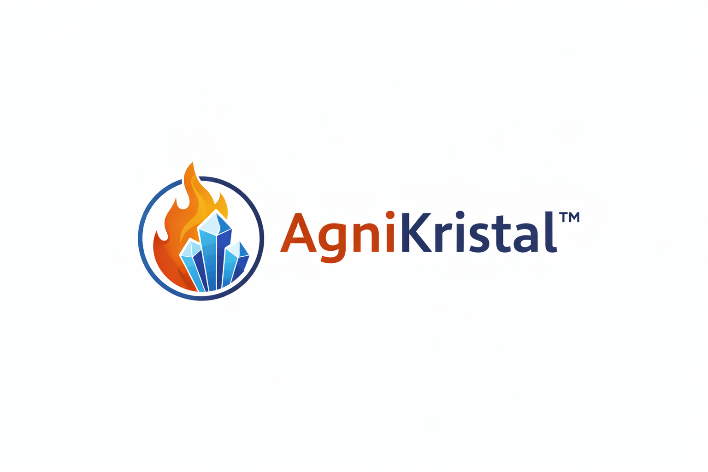

AgniKristal is a computational platform for screening API–coformer combinations in pharmaceutical crystal engineering.
AgniKristal is a computational platform developed for screening API–coformer combinations in pharmaceutical crystal engineering. It integrates ΔpKa prediction, hydrogen-bond interaction analysis, synthon scoring, and molecular visualization.
AgniKristal is a research-oriented computational tool designed to assist pharmaceutical scientists in identifying potential API–coformer combinations for co-crystal formation. The platform integrates chemical informatics, hydrogen-bond analysis, and predictive scoring algorithms to support early stage crystal engineering workflows.
The software evaluates molecular interactions between active pharmaceutical ingredients (APIs) and potential coformers using structural descriptors and chemical interaction rules. By combining ΔpKa estimation, hydrogen bond synthon detection, and interaction scoring, AgniKristal helps researchers prioritize promising co-crystal candidates for experimental screening.
The platform is intended to support computational exploration in pharmaceutical solid-state chemistry and assist in the design of new solid forms with improved physicochemical properties such as solubility, stability, and bioavailability.